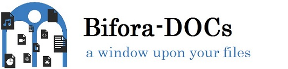
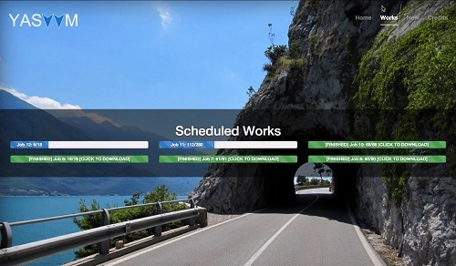
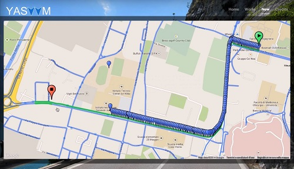

Projects
If you are more intrested in how I code, these are the repo you're looking for.
SVDRV class repos
During 2014 year I follow SVDRV class. The professor ask the class to produce several homeworks, small project to practice and understand better the theory behind computer graphics.
After a first, general, assignment to test class' coding ability [1], we develop a simple planetarium with OpenGL/FreeGlut libs[2],
we project and implement a small 3d world with a FPS like camera system[3], we experiment with panda 3d and BulletPhisics library[4],
we create a 3d model, armature and animation with Blender[5], and finally we integrate the model in a very easy video games[6].
Bifora-DOCs

Web Development professor require to work in team and made a final project. Bifora-DOCs is the result.
It's a single-page application, for document managing. We use php/mysql for back-end and html/css/javascript for front-end. We don't use any front-end framework because was a requirement.
If you are interested in code, follow the link.
NOSTS
Network Security professor ask us to really work hard on his class. To reach the final grade, we have to:
- Pass the true/false (30 questions, +1 right, -1 wrong, with motivation box!!)
- Implement a Network Security related project (Protocols or something similar)
- Pass the oral examination, and present the project
NotOnlySTS was my STS protocol implementation. For this project I decide to use QCA crypto libs and QT to manage TCP/IP stack.
I have also use OpenSSL libs to generate big random secure primes. After finish the first, command line version, i've implemented a GUI, using QT libs.
If you are interested in code, follow the
link.
YASVVM
YetAnotherStreetViewVideoMaket it's final project for Digital Image Processing class. Using JavasctiptV3 Google APIs, we allow a user to select two point on a map.
Than we calculate route with Direction Service and we select points that contains distinct images, using getPanoramaByLocation().
After that, we send all information to the server, which download the photos and compose the video.
 
you can a presentation video and some example in this Google Drive folder.
If you are interested in code, follow the link.
last update 12/11/14, check repo page for new interesting projects.